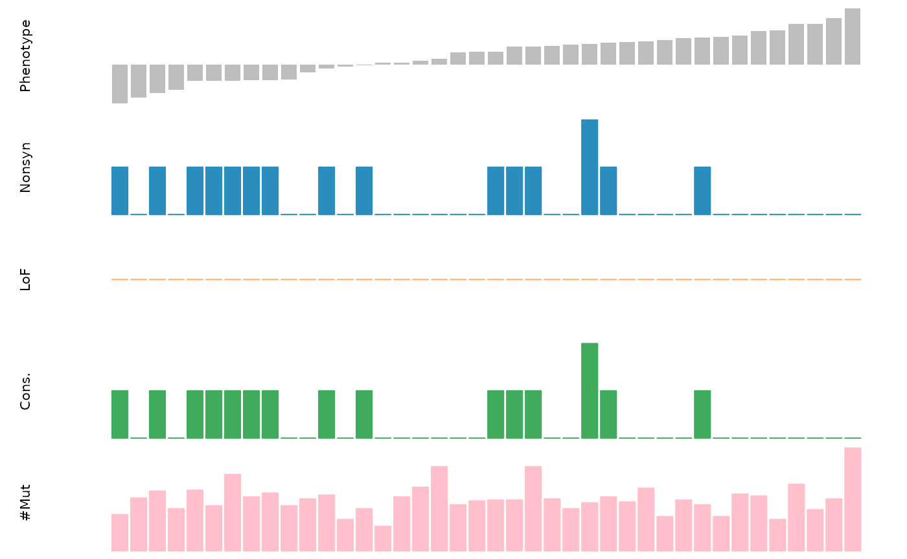

diffdriver_tutorial.RmdNeed 16G memory to run diffdriver. The place that needs the most memory is the parameter estimation for background mutation rate model.
Diffdriver requires three datasets from the user: phenotype or context of each individual tumor sample, somatic mutations identified from tumor samples and a list of driver gene names. Diffdriver will test the association between the phenotype/context with selection strength of each provided driver gene.
Diffdriver needs phenotype or context of each individual tumor sample. A data frame should provided, in this data frame the first column is sample ID with column name “SampleID”, the second column is phenotype or context with the phenotype or context name as column name (note no space or in tab in column names are allowed). See an example below:
phenof = system.file("extdata/", "example_phenotypes.txt", package = "diffdriver")
pheno <- read.table(phenof, header = T)
head(pheno)
#> SampleID SmokingCessation
#> 1 TCGA-N5-A4R8-01A-11D-A28R-08 0.5319630
#> 2 TCGA-N5-A4RD-01A-11D-A28R-08 0.0448991
#> 3 TCGA-N5-A4RF-01A-11D-A28R-08 -0.3140750
#> 4 TCGA-N5-A4RJ-01A-11D-A28R-08 0.4229920
#> 5 TCGA-N5-A4RM-01A-11D-A28R-08 -0.2830070
#> 6 TCGA-N5-A4RN-01A-12D-A28R-08 0.7874080A vector of driver gene names. Diffdriver will test the association for each gene.
genef = system.file("extdata", "example_gene.txt", package = "diffdriver")
gene <- read.table(genef, header = F)
head(gene)
#> V1
#> 1 CHD4
#> 2 PIK3CADiffdriver needs the somatic mutations identified for each tumor samples. Note this should include all somatic mutations identified, not just the ones in selected driver genes. Somatic mutations will be used to estimate background mutation rate and selection strength for selected genes. A data frame should be provided, see below for colnames of this data frame and example mutations.
mutf = system.file("extdata/", "example_mutations.txt", package = "diffdriver")
mut <- read.table(mutf, header = T)
head(mut)
#> Chromosome Position Ref Alt SampleID
#> 1 19 55653236 C T TCGA-N6-A4VE-01A-11D-A28R-08
#> 2 17 65134211 C T TCGA-NA-A4R1-01A-11D-A28R-08
#> 3 20 30354424 G T TCGA-N8-A4PM-01A-11D-A28R-08
#> 4 6 18215312 G C TCGA-N8-A4PO-01A-11D-A28R-08
#> 5 1 154186393 C G TCGA-NA-A4R0-01A-11D-A28R-08
#> 6 10 23003128 C A TCGA-NF-A4X2-01A-11D-A28R-08In addition to these datasets provided by the user, diffdriver also needs annotation files. See the package installation page for download links to these annotation files. Unless the number of tumor samples or number of mutations is very small, we suggest to use the 96-annotation files. Please download these files to a folder and provide the folder address to diffdriver.
annodir = "~/temp/annodir96"
list.files(annodir)
#> [1] "anno96_nttype1_annodata.txt" "anno96_nttype10_annodata.txt"
#> [3] "anno96_nttype11_annodata.txt" "anno96_nttype12_annodata.txt"
#> [5] "anno96_nttype13_annodata.txt" "anno96_nttype14_annodata.txt"
#> [7] "anno96_nttype15_annodata.txt" "anno96_nttype16_annodata.txt"
#> [9] "anno96_nttype17_annodata.txt" "anno96_nttype18_annodata.txt"
#> [11] "anno96_nttype19_annodata.txt" "anno96_nttype2_annodata.txt"
#> [13] "anno96_nttype20_annodata.txt" "anno96_nttype21_annodata.txt"
#> [15] "anno96_nttype22_annodata.txt" "anno96_nttype23_annodata.txt"
#> [17] "anno96_nttype24_annodata.txt" "anno96_nttype25_annodata.txt"
#> [19] "anno96_nttype26_annodata.txt" "anno96_nttype27_annodata.txt"
#> [21] "anno96_nttype28_annodata.txt" "anno96_nttype29_annodata.txt"
#> [23] "anno96_nttype3_annodata.txt" "anno96_nttype30_annodata.txt"
#> [25] "anno96_nttype31_annodata.txt" "anno96_nttype32_annodata.txt"
#> [27] "anno96_nttype33_annodata.txt" "anno96_nttype34_annodata.txt"
#> [29] "anno96_nttype35_annodata.txt" "anno96_nttype36_annodata.txt"
#> [31] "anno96_nttype37_annodata.txt" "anno96_nttype38_annodata.txt"
#> [33] "anno96_nttype39_annodata.txt" "anno96_nttype4_annodata.txt"
#> [35] "anno96_nttype40_annodata.txt" "anno96_nttype41_annodata.txt"
#> [37] "anno96_nttype42_annodata.txt" "anno96_nttype43_annodata.txt"
#> [39] "anno96_nttype44_annodata.txt" "anno96_nttype45_annodata.txt"
#> [41] "anno96_nttype46_annodata.txt" "anno96_nttype47_annodata.txt"
#> [43] "anno96_nttype48_annodata.txt" "anno96_nttype49_annodata.txt"
#> [45] "anno96_nttype5_annodata.txt" "anno96_nttype50_annodata.txt"
#> [47] "anno96_nttype51_annodata.txt" "anno96_nttype52_annodata.txt"
#> [49] "anno96_nttype53_annodata.txt" "anno96_nttype54_annodata.txt"
#> [51] "anno96_nttype55_annodata.txt" "anno96_nttype56_annodata.txt"
#> [53] "anno96_nttype57_annodata.txt" "anno96_nttype58_annodata.txt"
#> [55] "anno96_nttype59_annodata.txt" "anno96_nttype6_annodata.txt"
#> [57] "anno96_nttype60_annodata.txt" "anno96_nttype61_annodata.txt"
#> [59] "anno96_nttype62_annodata.txt" "anno96_nttype63_annodata.txt"
#> [61] "anno96_nttype64_annodata.txt" "anno96_nttype65_annodata.txt"
#> [63] "anno96_nttype66_annodata.txt" "anno96_nttype67_annodata.txt"
#> [65] "anno96_nttype68_annodata.txt" "anno96_nttype69_annodata.txt"
#> [67] "anno96_nttype7_annodata.txt" "anno96_nttype70_annodata.txt"
#> [69] "anno96_nttype71_annodata.txt" "anno96_nttype72_annodata.txt"
#> [71] "anno96_nttype73_annodata.txt" "anno96_nttype74_annodata.txt"
#> [73] "anno96_nttype75_annodata.txt" "anno96_nttype76_annodata.txt"
#> [75] "anno96_nttype77_annodata.txt" "anno96_nttype78_annodata.txt"
#> [77] "anno96_nttype79_annodata.txt" "anno96_nttype8_annodata.txt"
#> [79] "anno96_nttype80_annodata.txt" "anno96_nttype81_annodata.txt"
#> [81] "anno96_nttype82_annodata.txt" "anno96_nttype83_annodata.txt"
#> [83] "anno96_nttype84_annodata.txt" "anno96_nttype85_annodata.txt"
#> [85] "anno96_nttype86_annodata.txt" "anno96_nttype87_annodata.txt"
#> [87] "anno96_nttype88_annodata.txt" "anno96_nttype89_annodata.txt"
#> [89] "anno96_nttype9_annodata.txt" "anno96_nttype90_annodata.txt"
#> [91] "anno96_nttype91_annodata.txt" "anno96_nttype92_annodata.txt"
#> [93] "anno96_nttype93_annodata.txt" "anno96_nttype94_annodata.txt"
#> [95] "anno96_nttype95_annodata.txt" "anno96_nttype96_annodata.txt"
# library(diffdriver)
output_dir <- "~/temp/output"With signature adjustment (BMRmode = "signature"), which is the default mode, it will need around 20min to estimate parameters in background model. Please use the provided the annotation folder with 96-annotation files when running with the “signature mode”.
library(diffdriver)
res <- diffdriver(gene = gene, mut= mut, pheno = pheno, anno_dir = "~/temp/annodir96", k=6, totalnttype = 96, BMRmode = "signature", output_dir = output_dir, output_prefix = "testdiffdriver_sig")
#> [1] "Infer parameters in background mutation rate model"
#> [1] "Start to prepare input data for target genes ..."
#> [1] "coding..."
#> [1] "processing ..."
#> [1] "for qnvars, filling in missing values ..."
#> [1] "for cvars (0/1 categories), filling in missing values ..."
#> [1] "normalizing categorical variables in annotation matrix ..."
#> [1] "Only keeping the first two columns of the phenotype data frame."
#> [1] "phenotype name is SmokingCessation"
#> [1] "number of samples shared in phenotype and mutation file: 40"
#> [1] "Start to process gene: CHD4"
#> [1] "Start to process gene: PIK3CA"
#> [1] "Finished."
res
#> dd.p mlr.p mlr.v2.p fisher.p binom.p lr.p
#> CHD4 1.000000000 0.85864512 0.83477953 1.0000000 1.000000 0.7509494
#> PIK3CA 0.006751318 0.01370322 0.01300004 0.5576717 0.453489 0.1443223
#> dd.fdr mlr.fdr mlr.v2.fdr fisher.fdr binom.fdr lr.fdr mut.E1
#> CHD4 1.00000000 0.85864512 0.83477953 1 1.0000000 0.7509494 5
#> PIK3CA 0.01350264 0.02740643 0.02600007 1 0.9069781 0.2886446 7
#> mut.E0 E1 E0
#> CHD4 4 22 18
#> PIK3CA 9 22 18Without signature adjustment (BMRmode = "regular"), it will need around 20min to estimate parameters in background model. You can use the provided the annotation folder with 9-annotation files or 96-annotation files. The example below uses 96-annotation files. When total number of mutations is low, one should use 9-annotation files.
res <- diffdriver(gene = gene, mut= mut, pheno = pheno, anno_dir = "~/temp/annodir96", totalnttype = 96, BMRmode = "regular", output_dir = output_dir, output_prefix = "testdiffdriver_reg")
#> [1] "Infer parameters in background mutation rate model"
#> [1] "Start to prepare input data for target genes ..."
#> [1] "coding..."
#> [1] "processing ..."
#> [1] "for qnvars, filling in missing values ..."
#> [1] "for cvars (0/1 categories), filling in missing values ..."
#> [1] "normalizing categorical variables in annotation matrix ..."
#> [1] "Only keeping the first two columns of the phenotype data frame."
#> [1] "phenotype name is SmokingCessation"
#> [1] "number of samples shared in phenotype and mutation file: 40"
#> [1] "Start to process gene: CHD4"
#> [1] "Start to process gene: PIK3CA"
#> [1] "Finished."
res
#> dd.p mlr.p mlr.v2.p fisher.p binom.p lr.p dd.fdr
#> CHD4 1.00000000 0.85864512 0.83477953 1.0000000 1.000000 0.7509494 1.0000000
#> PIK3CA 0.03021595 0.01370322 0.01300004 0.5576717 0.453489 0.1443223 0.0604319
#> mlr.fdr mlr.v2.fdr fisher.fdr binom.fdr lr.fdr mut.E1 mut.E0 E1 E0
#> CHD4 0.85864512 0.83477953 1 1.0000000 0.7509494 5 4 22 18
#> PIK3CA 0.02740643 0.02600007 1 0.9069781 0.2886446 7 9 22 18To visualize the data for specific genes, diffdriver has a plotting function:
diffdriver::plot_mut(gene_name = "PIK3CA", mut= mut, pheno = pheno, totalnttype = 9, anno_dir = "~/temp/annodir9")
#> [1] "coding..."
#> [1] "processing ..."
#> [1] "for qnvars, filling in missing values ..."
#> [1] "for cvars (0/1 categories), filling in missing values ..."
#> [1] "normalizing categorical variables in annotation matrix ..."
#> [1] "Only keeping the first two columns of the phenotype data frame."
#> [1] "phenotype name is SmokingCessation"
#> [1] "number of samples shared in phenotype and mutation file: 40"
sessionInfo()
#> R version 4.4.3 (2025-02-28)
#> Platform: x86_64-redhat-linux-gnu
#> Running under: Red Hat Enterprise Linux 8.10 (Ootpa)
#>
#> Matrix products: default
#> BLAS/LAPACK: /usr/lib64/libopenblaso-r0.3.15.so; LAPACK version 3.9.0
#>
#> locale:
#> [1] LC_CTYPE=en_US.UTF-8 LC_NUMERIC=C
#> [3] LC_TIME=en_US.UTF-8 LC_COLLATE=en_US.UTF-8
#> [5] LC_MONETARY=en_US.UTF-8 LC_MESSAGES=en_US.UTF-8
#> [7] LC_PAPER=en_US.UTF-8 LC_NAME=C
#> [9] LC_ADDRESS=C LC_TELEPHONE=C
#> [11] LC_MEASUREMENT=en_US.UTF-8 LC_IDENTIFICATION=C
#>
#> time zone: America/New_York
#> tzcode source: system (glibc)
#>
#> attached base packages:
#> [1] stats graphics grDevices utils datasets methods base
#>
#> other attached packages:
#> [1] diffdriver_0.1.7
#>
#> loaded via a namespace (and not attached):
#> [1] cli_3.6.3 knitr_1.49 rlang_1.1.5 xfun_0.50
#> [5] textshaping_1.0.0 jsonlite_1.8.9 data.table_1.16.4 brglm_0.7.2
#> [9] SQUAREM_2021.1 htmltools_0.5.8.1 ragg_1.3.3 sass_0.4.9
#> [13] rmarkdown_2.29 grid_4.4.3 profileModel_0.6.1 evaluate_1.0.3
#> [17] jquerylib_0.1.4 fastmap_1.2.0 yaml_2.3.10 lifecycle_1.0.4
#> [21] compiler_4.4.3 fs_1.6.5 htmlwidgets_1.6.4 systemfonts_1.2.1
#> [25] lattice_0.22-6 digest_0.6.37 R6_2.5.1 bslib_0.9.0
#> [29] Matrix_1.7-2 tools_4.4.3 pkgdown_2.1.1 cachem_1.1.0
#> [33] desc_1.4.3